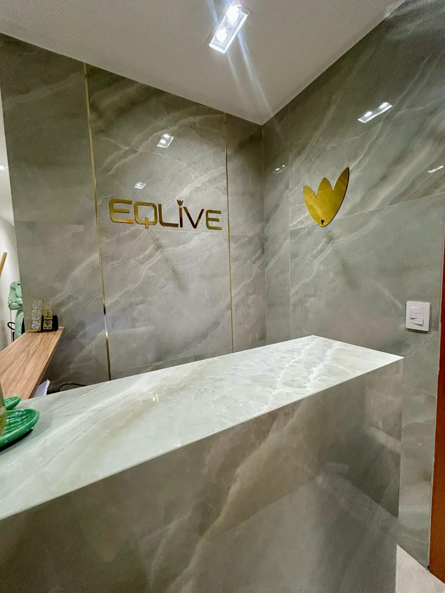
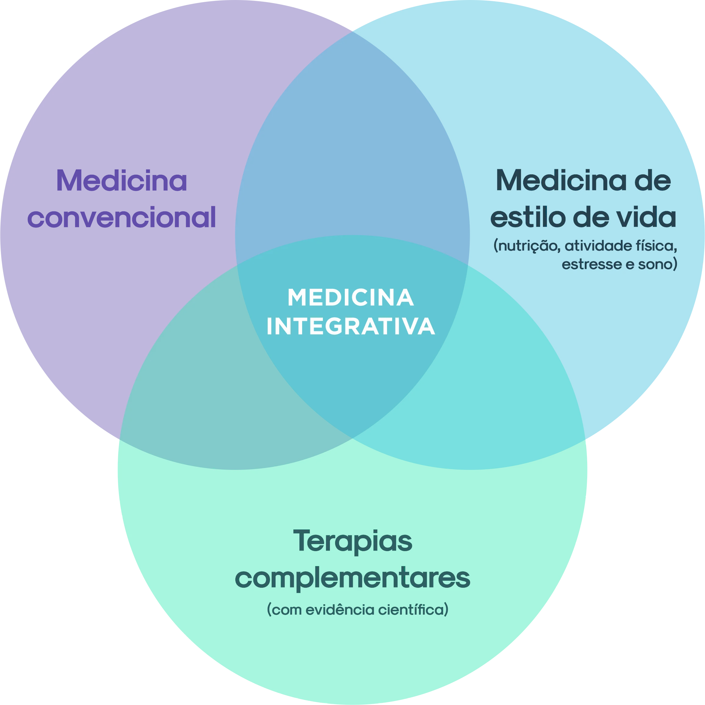
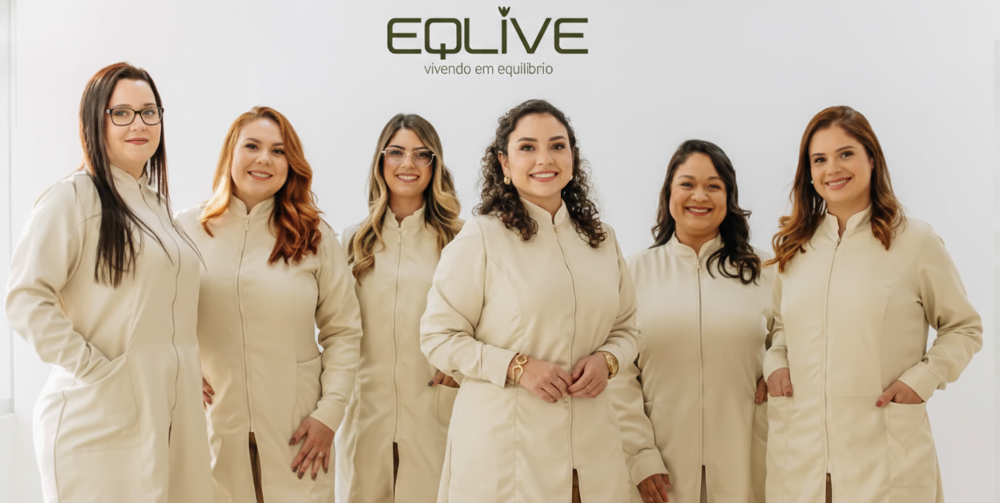

Condição
Depressão
Quando a tristeza persiste e o corpo perde a vitalidade.
A depressão vai muito além de “estar triste”. Ela pode afetar a energia, o sono, o apetite, a concentração e a motivação.
Na Eqlive, a depressão é avaliada com escuta qualificada, cuidado ético e acompanhamento contínuo.

“Quando a vitalidade diminui, o corpo e a mente estão pedindo atenção — não julgamento.”

Conceito
O que é depressão
A depressão é uma condição de saúde que envolve alterações emocionais, cognitivas e físicas.
Não é fraqueza ou falta de força de vontade.
- Estresse crônico
- Alterações hormonais
- Distúrbios do sono
- Inflamação
- Questões metabólicas
- Experiências de vida
Sinais e sintomas
Sinais e sintomas
Observe o corpo e a mente. O padrão é o que importa.
Tristeza persistente ou sensação de vazio
Perda de interesse em atividades antes prazerosas
Cansaço intenso ou falta de energia
Alterações no sono (insônia ou excesso)
Alterações no apetite ou peso
Dificuldade de concentração
Desânimo ou apatia
Irritabilidade
Isolamento social
Sintomas persistentes merecem avaliação, mesmo quando parecem “leves”.
Editorial
Por que a depressão nem sempre recebe o cuidado adequado?
Os sintomas são minimizados ou normalizados.
Existe medo de julgamento ou estigmatização.
O foco fica apenas no sintoma emocional, ignorando o corpo.
Falta acompanhamento contínuo.
Institucional
Como a Eqlive avalia
Avaliamos com tempo, escuta e contexto clínico.
Consulta aprofundada sem pressa.
Escuta da história de vida.
Relação entre humor, sono e hormônios.
Investigação de estresse crônico.
Integração com cuidados psicológicos.
Cuidado integrado
Cuidado Individualizado
Acompanhamento médico
Psicoterapia (quando indicada)
Estratégias de sono e rotina
Ajustes de estilo de vida
Suporte medicamentoso criterioso
Indicação
Para quem é indicado
Para quem sente tristeza persistente
Perdeu interesse no dia a dia
Tem cansaço físico/mental constante
Vive com sofrimento emocional recorrente
Prova social
“Ser escutada sem pressa mudou completamente minha relação com o tratamento.”
Paciente Eqlive · Acompanhamento em Saúde Mental
Fechamento
Você não precisa enfrentar isso sozinho(a).
A depressão é uma condição de saúde e merece cuidado. Na Eqlive, você encontra um espaço seguro.
